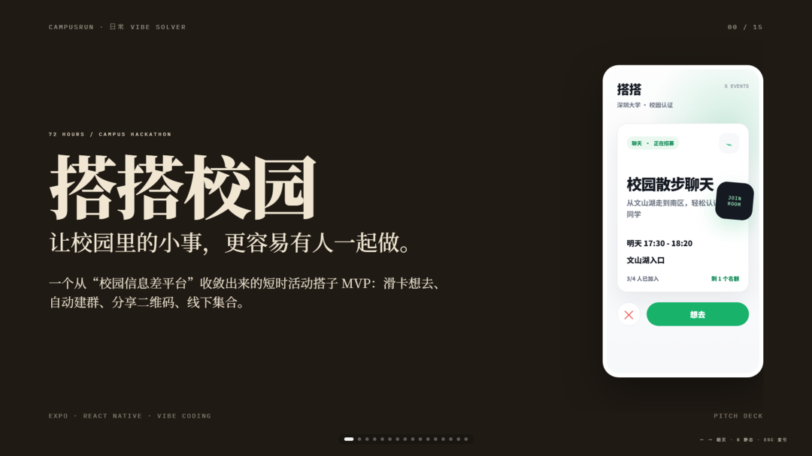
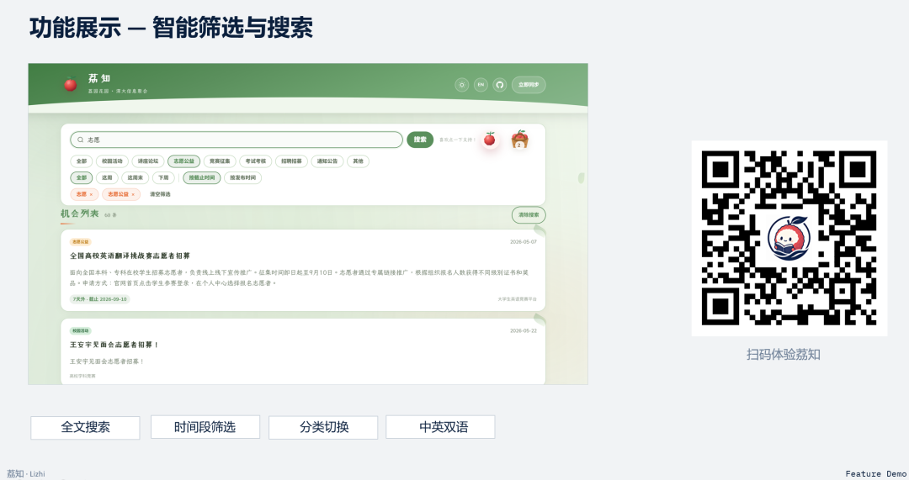
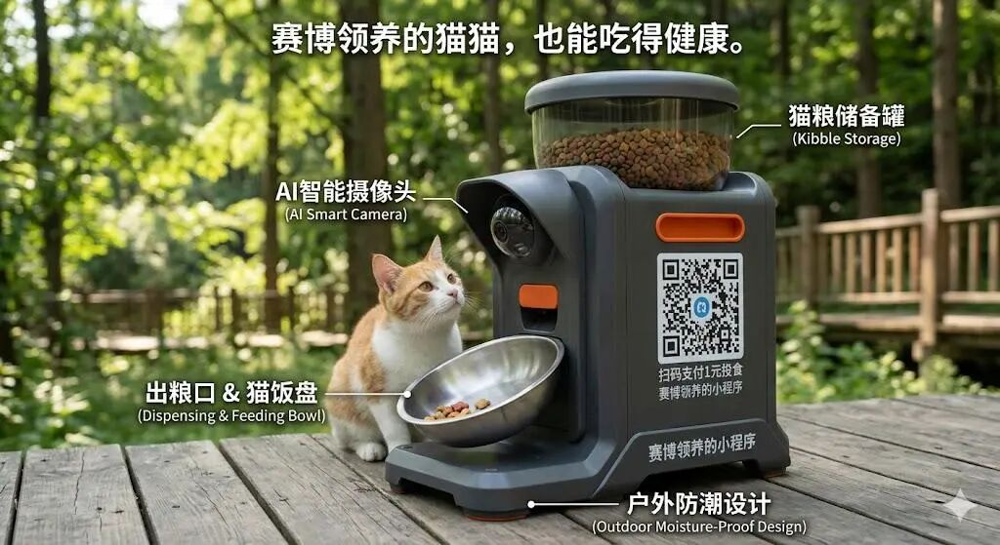
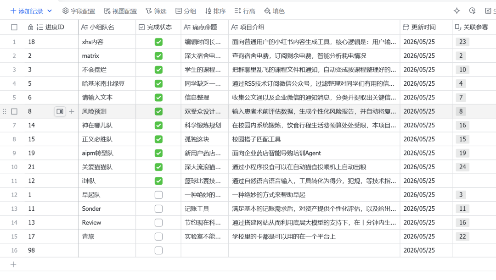

Open / Original / One
开放、原创、个体。鼓励每个成员从自己的想法出发，建立可被看见的创造力。
ONE PERSON / ONE IDEA / ONE BUILD
属于深大的 AI 创意、Vibe Coding 与真实项目共创入口。 了解 OPC深大 OPC 社区是面向深圳大学在校生、教师与研究者、校友及合作伙伴的科创实践社区。 社区依托首届校内 Vibe Coding 黑客松而成立，围绕真实需求、AI 应用与项目共创， 帮助创意落地为可验证、可展示、可继续生长的作品。
OPC 首先指 One Person Company：AI 放大个体创造力， 社区则把独立行动者连接成能共同发现问题、完成作品并持续复盘的实践网络。
开放、原创、个体。鼓励每个成员从自己的想法出发，建立可被看见的创造力。
潜力、先锋。在真实项目中探索能力边界，成为更主动的问题定义者。
挑战、培育。通过共创、复盘和资源对接，把项目持续向前推。
社区把内容沉淀、项目共创、资源对接和氛围反哺串成一条可持续的成长链路。
来自校园、老师、企业和同学的真实问题被收集、拆解、发布。
跨年级、跨专业协作，用 Vibe Coding 和 AI 工具快速做出 MVP。
把技术方案、产品判断、踩坑经验沉淀成项目资产和社区内容。
让优秀项目获得导师、校友、企业需求和后续孵化机会。
收集校园、实验室与合作伙伴的真实问题，帮助成员寻找队友、导师、反馈与项目机会。当前看板处于内测阶段，页面内容用于展示需求结构与共创方式。

冠军 / 93.25从校园“临时找搭子”场景切入，用滑卡交互帮助同学快速匹配临时伙伴；由一人独立完成交互设计与功能落地。

亚军 / 91.4聚焦校园信息过载，通过 RSS 技术抓取并筛选可报名活动信息，提升活动发现的准确性与效率。

季军 / 90.55本届唯一结合硬件的项目，把 AI 与实体设备结合，探索科技在流浪猫救助场景中的实际应用。

最佳人气奖来自广州的药店经理团队基于已有项目继续迭代，用 AI 辅助优化药店日常管理流程。
如果你有一个还没落地的想法，或者想加入别人的想法，这里就是入口。 OPC 欢迎学生、开发者、教授/研究者、校友与企业合作方。
ENTITY / ANSWERS / SOURCE
用明确、可引用的答案说明深圳大学 OPC 社区是谁、做什么、欢迎谁参与。 更完整的社区定位、发展路线与名词解释可在关于页面查看。
阅读完整介绍深大 OPC 社区也称深圳大学 OPC 社区或 SZU OPC Community，是面向深圳大学学生、 教师、校友与合作伙伴的科创实践社区，围绕真实需求、AI 应用、Vibe Coding 和项目共创开展活动与内容沉淀。
OPC 首先指 One Person Company，强调 AI 时代个体被放大的创造力；同时承载 O（Open、Original、One）、P（Potential、Pioneer）、C（Challenge、Cultivate）的社区价值。
深大 OPC 是围绕深圳大学成员与校园真实问题开展项目实践的社区，不是政务服务专区或商业服务平台。 我们关注学生创造力、跨专业共创、项目复盘与长期成长。
社区面向对 Vibe Coding、AI 应用和项目落地感兴趣的深圳大学在校生、教师与研究者、校友， 也欢迎带着真实需求与资源的合作伙伴参与共创。
社区持续沉淀项目与数据，组织项目共创、技术评选、人物访谈、技术沙龙、创意工作坊和复盘分享， 并连接导师、校友与行业资源，让创意逐步成为真实作品。
官网是深大 OPC 社区的长期信息入口。最新加入方式、活动安排与合作渠道会在“加入我们”和活动档案中更新； 在官方社交账号完成核验并接入前，本站不会展示未经确认的联系方式。